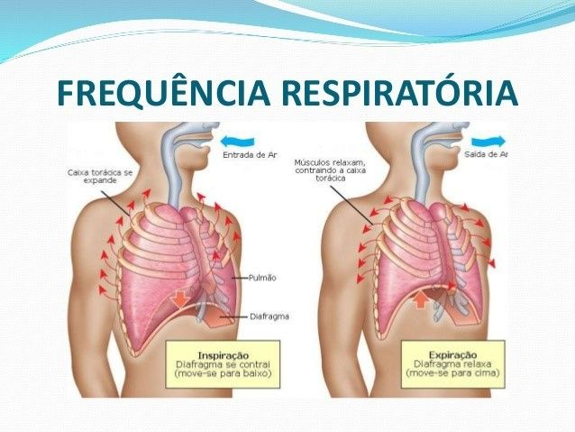
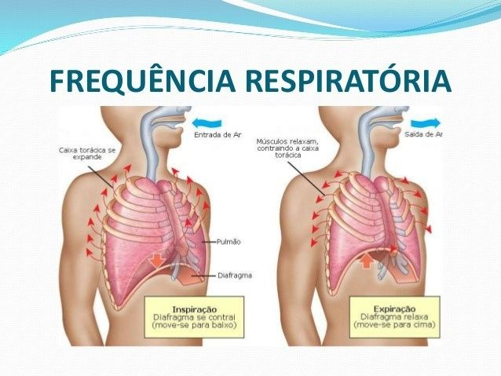

Vias respiratórias
Fossas nasais, cavidade e faringe preparam o ar — cílios e muco removem partículas.
Grupo 2 — Biossistemas do Corpo Humano
Isabela Maria Lopes da Conceição | Maria Carolina Lima | Lenira Sousa de Medeiros | Larissa Cristina Vieitas Munhoz | Bianca Parma Dorigueto Oliveira | Ivoneide Pinheiro da Silva | Tayná Pereira Peixoto | Kayque Alex Oliveira Rios | Juliana Abraão de Souza
O sistema respiratório é responsável pela ventilação (entrada e saída de ar) e pela hematose — processo pelo qual o oxigênio é transferido aos capilares pulmonares e o dióxido de carbono é eliminado. Esse processo sustenta a respiração celular e a produção de ATP nas células.
Inclui nariz, cavidade nasal, faringe, laringe, traqueia e brônquios — tem função de conduzir, filtrar, umidificar e aquecer o ar.
Formada por bronquíolos respiratórios e alvéolos, é a região onde a difusão de O₂ e CO₂ entre ar e sangue ocorre com alta eficiência.
 

Breve descrição das estruturas desde a entrada do ar até os alvéolos.
Fossas nasais, cavidade e faringe preparam o ar — cílios e muco removem partículas.
Condutos rígidos por anéis cartilaginosos que mantêm a via aérea aberta; ramificam-se nos pulmões em brônquios e bronquíolos.
Pequenos sacos revestidos por epitélio muito fino e rede capilar — locais da difusão O₂ ↔ CO₂. A presença de surfactante evita colapso alveolar.
Órgãos divididos em lobos, recobertos pela pleura. O direito possui geralmente três lobos; o esquerdo, dois.
Diafragma e intercostais promovem mudanças de volume torácico; músculos acessórios atuam em esforço respiratório.
Protegem a via aérea durante a deglutição e são essenciais para a fonação.
Estrutura óssea e muscular que protege e permite a mecânica respiratória.


O sistema respiratório está profundamente interligado a diversos sistemas do corpo — segue um resumo das principais interações com explicação da importância de cada uma.


Vídeo produzido pelo grupo — serve como revisão visual do sistema respiratório e das estruturas estudadas.
Valores aproximados (em %): O₂, CO₂ e N₂ — ilustrando a perda de O₂ e ganho de CO₂ no ar expirado.
Teste rápido — o quiz dá feedback imediato e uma explicação curta.